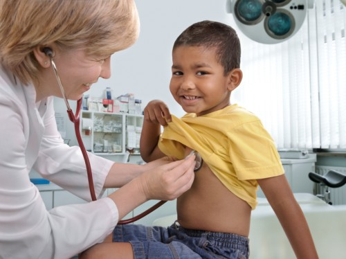
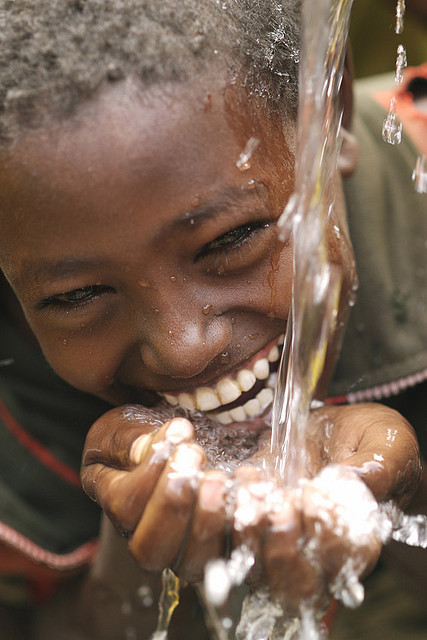
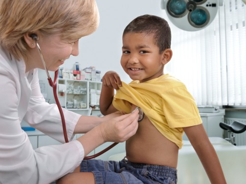
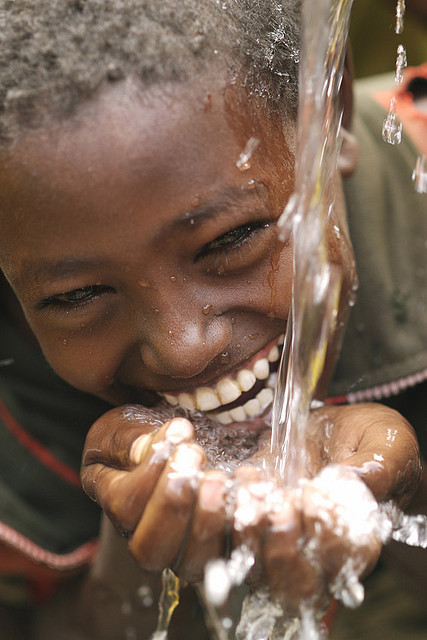

Sobre nós
O ReciclAção propõe estimular e mobilizar a comunidade a descartar adequadamente seus materiais recicláveis, retirando-os do meio ambiente e dando origem a um ciclo fértil e produtivo que retorna em forma de recursos locais, com ênfase na educação e na cooperação.
O Projeto reciclação começou 3 anos após o desabamento do campinho, na Rua Gomes Lopes em 2010, provocado pelo temporal e acúmulo de lixo nas encostas.36 pessoas morreram e 7 mil ficaram desabrigadas. A partir disso o grupo PROA, junto com a Cris dos Prazeres e sua equipe de trabalho, criaram o projeto ReciclAção para promover ações de conservação e conscientização ambiental no morro dos Prazeres, concentradas no bem-estar das pessoas através do combate de doenças como dengue, zica e chikungunya e outras doenças causadas por acúmulo de lixo.
Saiba mais >>

Ações
Encontro com Escolas >> Cefé no ponto >> Palestras temáticas >> Mutirão de limpeza >> 10 min contra o Aedes Aegypti >> Coleta seletiva >>
Próximas ações
Impacto gerado
O ReciclAção propõe estimular e mobilizar a comunidade a descartar adequadamente seus materiais recicláveis, retirando-os do meio ambiente e dando origem a um ciclo fértil e produtivo que retorna em forma de recursos locais, com ênfase na educação e na cooperação.
O Projeto reciclação começou 3 anos após o desabamento do campinho, na Rua Gomes Lopes em 2010, provocado pelo temporal e acúmulo de lixo nas encostas.36 pessoas morreram e 7 mil ficaram desabrigadas. A partir disso o grupo PROA, junto com a Cris dos Prazeres e sua equipe de trabalho, criaram o projeto ReciclAção para promover ações de conservação e conscientização ambiental no morro dos Prazeres, concentradas no bem-estar das pessoas através do combate de doenças como dengue, zica e chikungunya e outras doenças causadas por acúmulo de lixo.
Pontos de coleta
Saiba onde está o ponto mais próximo da sua casa!
Ecobags
Caçamba da comlurb

Você Sabe?
Responda perguntas sobre:
 


